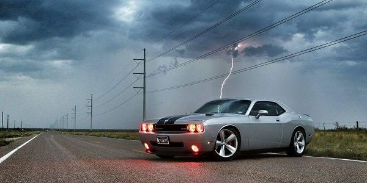
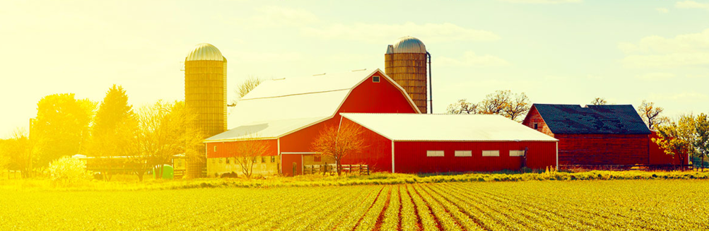
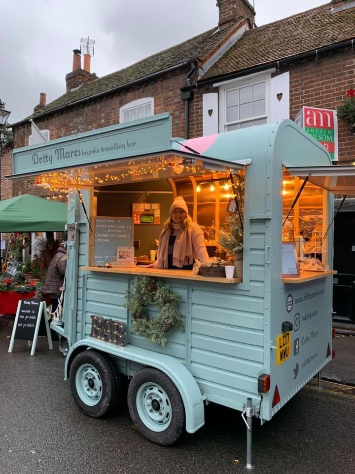
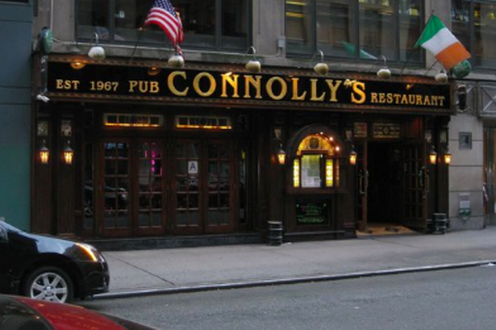
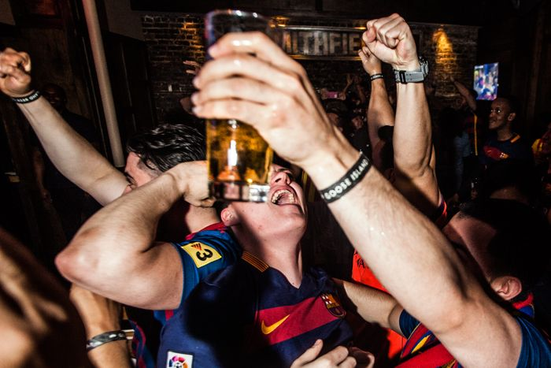
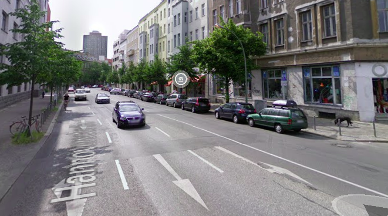
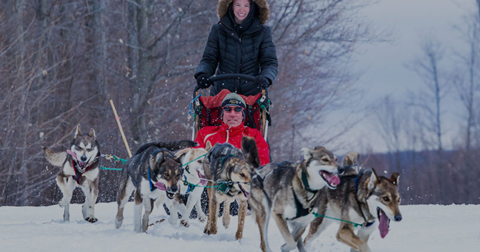

I wanna be rude
------------------------
For a da day
I wish i ran away
Then to promise
that i will stay
and obey our birth
right or US citizenship
way.
The stairway too.
Help me to win
my strength
To get pass of the
holiday of the
easter eggs
To show up at her
door tonight
Cause she is a
glamour and i was
held in a weekly
fight
To get that hub
up and running
To see my next
door neibghour
wife
To get those
tickets without
a shiverring
earthquake or
calamities
Cause the deputies
are not responding
When it comes to
hunny and i just
keep fighting,
the doors are
lock on werewolf's
loft.
He banned the
loft and saled
the plot
Planted some
trees to eat
off all the
cherries
Left some hints
without no berry
Oh boy that
hun is necessary.

Farming camp
A farm is a great deal,
It takes courage and skill,
To be a food processor every year,
To stay on top of the valley,
To have tractors and cats sitting in the alley,
To have a big familly and money,
To pay for it all takes guts,
To have workers and no rats,
I invite you for the sake of USA
To buy this software today,
It will increase your apetite,
Save you money and working fees,
Let's you create more crops and plans trees,
It has sensors and automatization fields,
It can be remotely managed,
When you have a notebook in your spare luggage.
You can also sing or shout.
"Grain, grain make it rain, place that seed,
making a good deed"
more by our farming top management system
on my cell phone.
=====================

Food caters
Catering is just so great,
When you that meal in a plate,
Browsing through your instacart,
Waiting for the gal and not be apart,
Serving lunch with that sweethart,
Instacart is not enough,
When things go tough,
And keeps you safe,
From the environmentals sake.
I am eagger to start the launch
Of that add-on to get that brunch.
nstacart i don't have much money,
But using my add-on i can order supper
for my honey.
So please be tuned in for the app
that will be sure in the play store.
=====================
Inside my hart
Inside my arms,
You'll die with fear,
If you'll fight
For the pain to dissapear.
Glory and will,
Don't interfeer
In lack of judgement
To rudimentary blindage.
Of thoughts of mightness
As you are some kind of royal highness,
That you pay to get stress
Out of us, just don't fuss.
I'll waste my time and effort toom
To be a part of Bundestag,
When i use just a tag at your front door,
To open, work and feel the sour.
Of elements beneath our soul
To explore your neiborghood and a building lot
To face the sickness of the weak without a momma
Not to pay for rent or feel the freedom
Of a drive on the road cause you won't tell
Or will just remain friends in common sense,
To feel patient inside and don't ignite,
The freedom and peace that makes us happy
To get outside with a puppy,
Run spend a dime and buy a coffee.
Yell scream, and read like we use to be children
In the library to seek those beautyfull eyes,
In despise of your sacrifice to us.
=====================

在俱乐部的夜晚
***
听一些流行音乐，
吹一些蒸汽
喝一些
子得到那笔款项
成为我的第一名。
***
不要做我
并摆脱审查
去玩流行音乐
ugg，你不适合我，
***
如果你说我愿意
虚伪的
从理论上讲
粉碎那个G
***
当我中奖纽约彩票时
倒一些田纳西州威士忌
女孩，你对我来说意味着世界，
你看不出来
***
我正在跟一些团伙
爆炸，这样你就不会挂了，
放置灰尘并燃烧一些轮胎，
用热线把那辆车弄干，
为了制作一个像邪恶的特技，Knievel。
Zài jùlèbù de yèwǎn
***
tīng yīxiē liúxíng yīnyuè,
chuī yīxiē zhēngqì
hè yīxiē
zi dédào nà bǐ kuǎnxiàng
chéngwéi wǒ de dì yī míng.

晚上出去
***
从我的矮人那里赚钱，
像左撇子一样点亮一支雪茄
抽烟...
[声音：hip hop tzurraii]
我知道纽约的生活很艰难
***
烟雾弥漫
然后你开始疯狂
我什至都不会听到
我和李通电话
***
跟他穿衣服也看
戴上我的钻石耳环
我的钻石戒指和金色iPhone
我的大城市也梦想着
我的虎毛大衣，
李，你应该捡起来，
我病了
而且不知道该花谁
一大堆现金
***
致电豪华轿车接我们
带我们去LaCaféothèque或Coutume，
咖啡店
绕行
在第五大道上
司机随它去吧
已经接我了
我失控了
***
当李喝醉的书我
从纽约出发的航班
比佛利山庄
不用药让您判断
我花了我的钱
***
司机给我预定了一辆保时捷
可转换的顶部
李给我拿了Vertu
如果你不吻
从我。
***
想见我的女孩，
亚历克西斯在酒吧里
大声跳舞
摇那个紧屁股
那个M好骄傲
***
我会在deezer上跳舞
直到我到达现场
李停止锻炼
你不是那个
愚蠢的我
碰我的小偷
当我跳舞的夜晚。
***
给我预定一辆保时捷
敞篷上衣
给我一个Vertu
然后我们会亲吻
***
不要艰难
你会毁了它
我也会带亚历克西斯，
从山上开车
***
到纽约
你知道谁，
也许M
李删掉了
不想打架
或争论是否
得到现金
我会说我不会
就像你说的那样
留胡子
你在想什么
***
让他们离开关节
尖叫我不会
***
看着窗户，
itch子我可以抱怨
外面只有雨

New Years 201*
***
Morning on my Block
after New Years,
Allot of bottles
next to my flat
in Berlin,
God those people
know to party hard,
on new years day,
Moet, Chardonnay,
***
Pretty viwes that
call me hun ..
singing all night.
At the bar next to
sight.
***
T i wish you where
here and live your mom,
To get to a club or
party jam,
Know some fancy
restaurant in Est,
where we uesd too,
maybe get a drink
or two, and a big
sandwich, gosh i was
so starving.
***
Get back like we used
too, at that hot wine
At the skating ring
at the Royal Platz
Where they used to
sign carols and skate
all night, what a nice
evening, talking of
what it could, if i
only knew that technology.
***
I met a girl there too,
Talking about HR and
you. Technology and
what is seemed to you
and the most important
thing was, the dollars
too, rather than a hot
soup.
***
So i wish to come back,
Better than i used to be.
-------END------

Holidays in the U.S.A.
***
Nothin better where to stay
On a californian ranch bought yesterday,
We waited to book that holiday,
Lucky on booking (.com) is what
i needed too,
Get better acoomodations as i read
my Yahoo (.com)
***
Near a chimney to read my poetry,
To make feeling more unhappy,
Cuz "for a year we ain't go
no where Papi"
As i was nervous to say,
Bonita, i am with you all the way
***
Let's wrap up for tonight of this slay ride,
Mush those dogs at the nest or even hut,
Let the slay fly all the way back this night,
***
Let me poor you some champagne,
You mushed those dogs all that way
Me resting in the back slay.
***
Get those glasses and lets toast
I am always on time and a good host,
I'll cook a stake and let it roast,
Pour some "rose" on it and pepper too,
Salt not that good for me and you.
***
For Alexis 21-jan-2021

Those big brown eyes
***
I remember before you
arrived,
I would recognize you
would be in a disguise
When you walk down the
street
I can hardly feel my
feet
***
As i think the snow
will melt
Before your walk and
the storm will go away
As i know that should
be you in our
neiborghood alley.
***
I guess even now
The winter snow
And don't know how
Your eyes keep comming
up
In that windy snow fall
***
And as i walked,
I realized that's not
a bluff,
And there you where,
In New york, you smart
girl,
I was stressed you
freezed
***
Or next to me, on our
way..
For a coffee shop to
stay,
To get the frost bite
melt away,
The taxi's where so
slow,
The big snow which
made your cap
from Dark brown to
a winter white
***
Your frozen nose,
which i could feel
Every time you
where in my arms
and let me get
your scarf untied,
I remember as i
keept you warm,
And get the
snow off your coat.
***
That coffee shop's
not far
Will get a blanket,
at the bar,
Some brownies too,
As i look at you,
and see them eyes
That blink in them
and your warm soul
I think i am
confused as you
where amused
I couldn't recognize
which are the brownies
And which are your eyes.
***
I may say, that i like
your way,
That smurf smile and
sparkling eyes,
The way the coat falls
on your thies,
I think Madam, that
your eyes
Are better that those
brownies we
ate in those winter
stormy nights.
==========END========

Something tonight too
***
A wife i love not as a
impostor
but as a client of the bar.
with love from Buzau Romania,
to her, his love from
United States of America,
New York, bufallo girl as
does she wrote
***
I wanna make your mom a
granny, to deliver her
first kid honey,
a girl or a boy, like
having something similar
between you and i,
your smile and dense hair,
and brown kind eyes,
and with my my funny smyle
and clever style.

A days work
***
Started to say i woke up
And smelled that coffee
And heard her whisper to mee
Stay one more minute to say
***
Happy birthday honey, where going to America
Left her a hug just, did some push-ups on the rug
Get some honey and a tea,
You god, you are the world to me.
***
Hun i will go to work all day,
To get some cash for us in US to stay,
Did my projects and an alibi
To get involved
In a US company.
***
I'll text you i did okay,
After i sign the paper today.
I got to go, get on my bike,
I'll be home almost tonight.
***
Have a great day and drink your coffee
And no moody to stay stressed
Cuz you should drink a smoothie.

A poem of last night
***
I hit it up last night,
Didn't wanna wrestle
Or get in a fight,
I had doubts and run all night,
I was all alone but ..
I hold my hoodie tight
***
Was snowing,
Wished someone was there,
I thought of calling you,
But i had no change to pay,
To say i wish you where with
me on last years christmas day,
***
I wanted to show you Times Square
The lights and things to buy,
not just stare,
I thought it was a scam ,
When i got fired for listening
shazam.
***
I'll buy you a pizza
Cuz i have some change
But i'll rearrange that
after tonight
So i won't have a morning rage
Or bad headache.
--------END--------

Another poem of last night I hit it up last night, Didn't wanna wrestle or get in a fight, Had doubts and run all night, Alone in this dark whole In front of an old avenue store I was cold but had hoodie pants and snickears *** Jogging without any judgement in the snow, I swear girl i was out of control, I wished i was someone else, To tired to see you where in fact calling for me, *** I need to wake up bitch, Stop the scream, i wouldn't be mean, If you pour some drinks to you know who To get the pay and deliver something sweet this christmass too *** But he did not pay, you always disobey And now i am in new york and walk all alone, To cover my harts wholes With empty wishes, wish i had a dog Like our pup Ralph, To imagine and see what ralph had more sould to mee, Than you or our old home christmas tree *** This is no Christmas, wish i'll stay here until i'm old In Manhattan, this city means the world! I thought of calling you a mut, Things to scam a whore of what you are Getting me fired from the melody company Leave me with spare change in my home *** Calling the police when ill Couldn't even get money to listen to a deezer melody *** Even shazam could not detect You're dirty character or scream I am going solo on my own, you mean! Stop with the trial You black hat. I am in love and don't say i'm in a bluff, I love you, my Alexis choco-puff.

Hello Darling Dear *** I wished today from you to hear And hear i did and loved your sweater too As i did also your hair I wished to be there and not to bear *** The closeup of the pandemia to hold your hand and have nothing to wear as i see you straighthen your hair *** As i won't dispear that i am keep looking for position as a programmer so i don't hesitate and demonstrate i loved you like on the first online date *** Looked at flights and entry nights In the middle of the year to see you and be close my dear ***